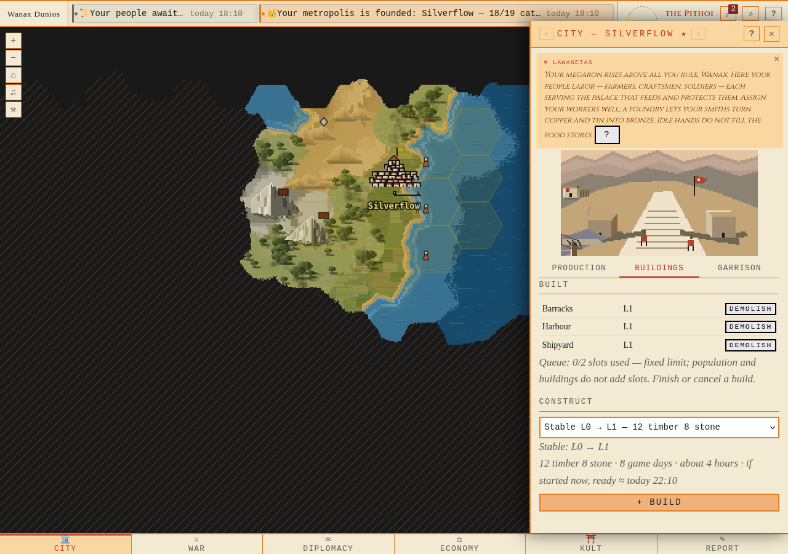
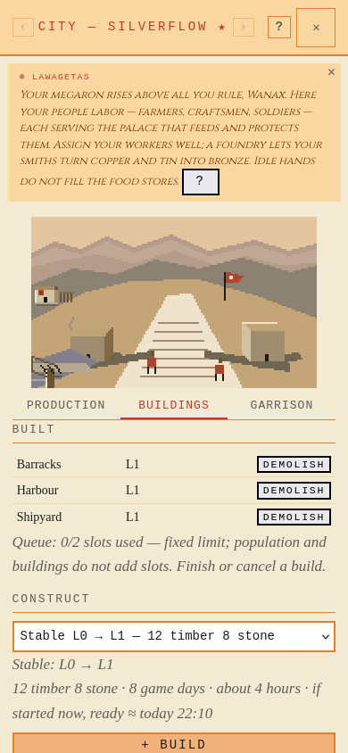
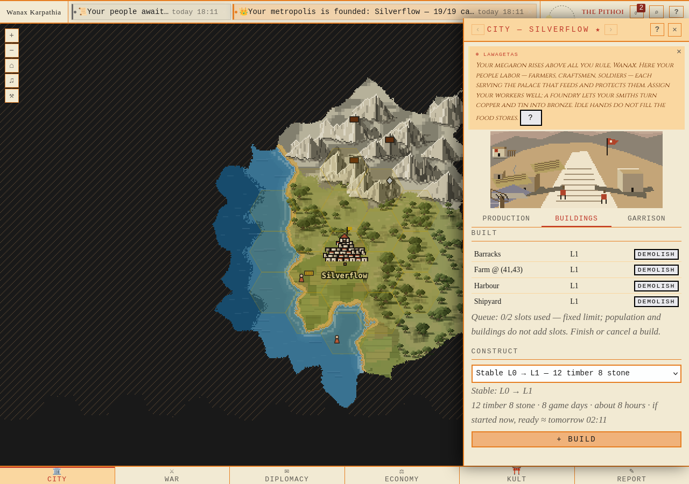
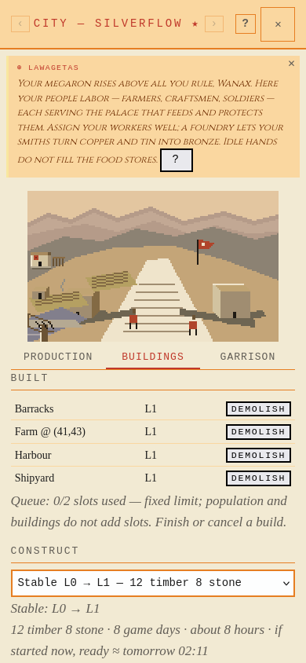

Vanlig registrering/join/grundning; därefter uttrycklig byggnads-/varufixtur i egen färsk DB. Riktiga Firefoxklick och faktisk Keryx. Samma stall tar 8 game days; väggklockan följer varje världs runtimecadence.
Bevisrapport1800-provenance3600-provenance



